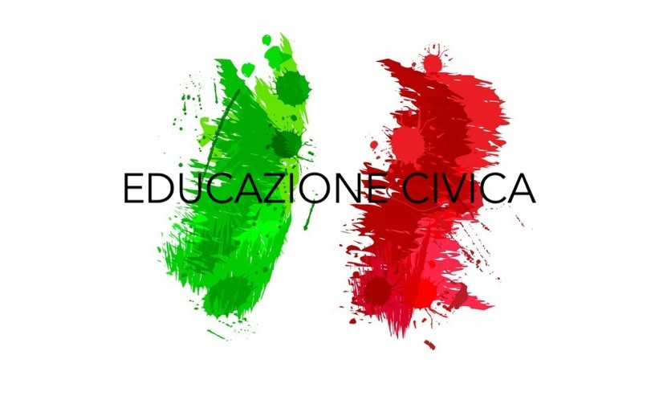

Portfolio Educazione Civica di Matteo Putignano
Una breve introduzione

Mi presento, sono Matteo Putignano, ho quasi 19 anni e frequento l'Agnelli ormai da 5 anni. Ho fatto le medie a San Benigno Canavese, quindi sono 8 anni che faccio parte di una famiglia salesiana. Ho scelto di fare informatica perchè mi piace molto la logica e mi piacerebbe un giorno sviluppare videogames di successo. In questo sito troverete una presentazione degli argomenti di educazione civica che abbiamo trattato nel triennio divisi per materia.